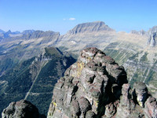

Overview

From the SW. Gould's place on the Garden Wall.
Mount Gould is located about 3 miles north of Logan Pass in Glacier National Park. It is the highest point along the Garden Wall, which rises above the Going-to-the-Sun Road. From the west, the mountain is neither very impressive nor photogenic. It just appears as a broad high portion of the Garden Wall. However, from the east, Mount Gould is very impressive rising above Lake Josephine and Grinnell Lake. From this angle it is possibly one of the most photographed peaks in Glacier National Park, appearing on almost every calendar of Park scenes.
The broad west face has a surprisingly easy route - if care and patience are exercised. The northwest ridge is somewhat more difficult, and extremely difficult routes exist on the shear northeast and east faces.
From the north.
The views from the summit are especially rewarding because of Mount Gould's central location and the fact that no larger peaks block the view of any large parts of the Park.
The mountain is named for G. R. Gould of Santa Barbara, California, a hunting companion of G. B. Grinnell who was one of the leading figures in the establishment of Glacier National Park.
The first recorded ascent of Mount Gould was made via the West Face Route in 1920 by Frank B. Wynn, Harry R. Horn, Henry H. Goddard, and party.